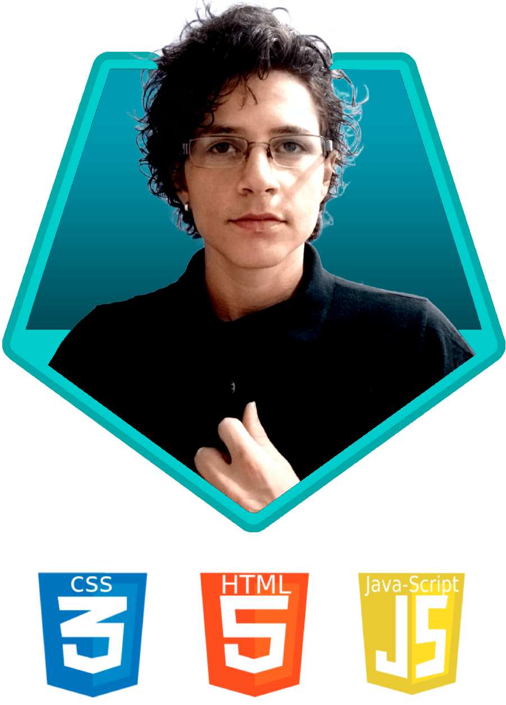

DESENVOLVEDOR FRONT-END
Olá, meu nome é Ernesto Rampanelli Neto. Sou desenvolvedor front-end com especialidade em HTML5, CSS3 e JavaScript com foco na criação de interfaces Web. Prezando pela eficiencia, responsividade e visuais atraentes para proporcionar a melhor experiência ao usuário. Ficou interessado? Explore meus projetos acima.
